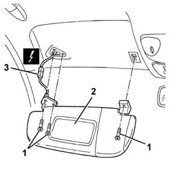
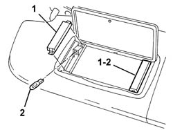

7065C33 sun blind with courtesy mirror and courtesy light one lh or rh r r
- Path
- Procedures > 70 FITTINGS > 7065 SEAT BELTS AND ACCESSORIES > 7065C accessories and decorations > 7065C33 sun blind with courtesy mirror and courtesy light one lh or rh r r
- Kind
- repair procedure (removal / refitting; the operation number is the code)
- Applies to
- all engines; all production periods
- Interactive page
- https://sloeber94.github.io/elrnDB-a147/en/#/3025933
Applies to: all engines; all production periods
 Removing
Removing
 Refitting
Refitting1. Unscrew the sun blind retaining bolt.
2. Move the sun visor slightly.
3. Disconnect the electrical connections.
 | Name | Connector |
|---|---|---|
3 | Driver's sun blind light |
| Name | Connector |
|---|---|---|
3 | Passenger sun blind light |

Applies to: all engines; all production periods
1. Take off the courtesy light cover if necessary.
2. Remove the bulb (press-fitted).

Applies to: all engines; all production periods
Refitting
RemovingCheck that the sun visor is undamaged.
If removed, fit the bulb and fit the courtesy light cover.
Connect the electrical connection
Position the sun visor and fix it using the bolts.
Check that the sun visor works smoothly and the courtesy lights are operational.
Topics linked from this page (2)
Topics that link to this page (11)
- 5050B64 rain sensor electronic unit r r
- 5050B66 rain sensor electronic unit cover - r r
- 5505C41 cabin wiring - r r
- 5580C50 (HEAD- BAG MODULE ) (one), left or right - R.R.
- 7030B12 sliding roof (assembly) - r+r
- 7030B40 drainage channel - r r
- 7030B50 sun roof guide , one , lh or rh - r r
- 7035A14 (Bonded type) windscreen GLASS - R.R. - Includes. cleaning edges of glass and housing in bodyshell
- 7035A18 windscreen glass r r including cleaning of housing
- 7040H10 roof panel lining - r r
- 7040H16 roof panel lining - r r